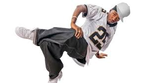
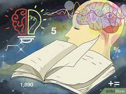
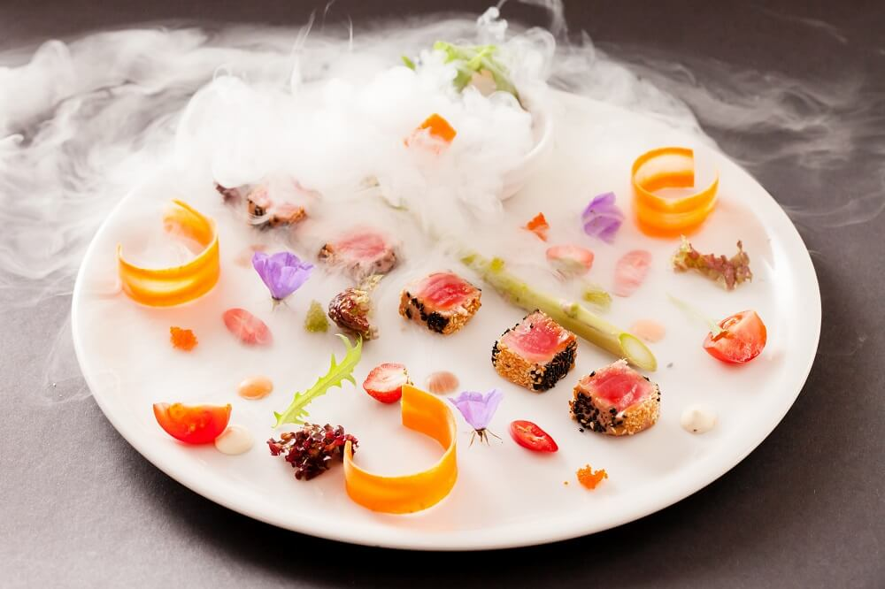
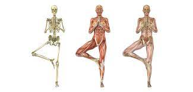

Krumping
['krəmpiNG]
Krumping is a style of dance that originated in the early 2000s in Los Angeles, California, particularly in the African-American community. It is a highly energetic and expressive form of street dance that is characterized by its fast, aggressive, and exaggerated movements. Krumping is often associated with freestyle improvisation and is typically performed in battles or cyphers, where dancers take turns showcasing their skills and creativity.
Synonyms: Clowning - Another style of dance that originated alongside krumping and shares similar movements and improvisational elements.
More.
Opposite: Formal dance styles - Dance forms that are highly structured and follow specific techniques and choreography, such as ballet or ballroom dance.

Metaphysics
[medə'fiziks]
Metaphysics is a branch of philosophy that deals with the fundamental nature of reality, including abstract concepts that go beyond the physical world. It explores questions about the ultimate nature of existence, being, substance, and causality. Metaphysics seeks to understand the underlying principles, principles, and laws that govern the universe and the nature of reality itself.
Synonym: Ontology - The study of being, existence, and reality.
More.
Opposite: Nihilism - The philosophical belief that life is without objective meaning, purpose, or intrinsic value, and that there is no inherent order or structure to the universe.

Euphoria
[yo͞o'fôrēə]
Euphoria is a noun that refers to a state or feeling of intense happiness, excitement, or joy. It is often characterized by an overwhelming sense of well-being, elation, or exultation. Euphoria can be experienced both mentally and physically, often accompanied by a sense of euphoric energy or a heightened state of positivity.
Synonyms: elation, ecstasy, bliss, happiness, joy, exhilaration
More.
Opposite: Melancholy, depression, sadness, gloominess, despondency
Gastronomy
[ga'stränəmē]
Gastronomy is an advanced culinary term that encompasses the study and appreciation of food and its cultural, historical, and social significance. It goes beyond the mere act of cooking and eating, and delves into the art, science, and philosophy of food. Gastronomy involves a deep understanding of ingredients, cooking techniques, flavor profiles, food pairings, and presentation. It also considers factors such as food sustainability, food ethics, and the impact of food on health and well-being. Gastronomes are knowledgeable about regional and international cuisines, culinary traditions, and food history.
Synonyms: culinary science, culinary art
More.

Proprioception
['prōprēə'sepSH(ə)n]
Proprioception is an advanced term in sports that refers to the ability of the body to sense and perceive its own position and movement in space. It involves the sensory feedback and awareness of the body's position, balance, and motion, and is an important aspect of motor control and coordination. Proprioception is essential for athletes in various sports, as it plays a critical role in maintaining balance, stability, and coordination during complex movements. It helps athletes to accurately control their body position, adjust their movements, and respond to changes in their environment, such as uneven surfaces or opponents' movements.
Synonyms: Kinesthesia, body awareness
More.
Opposite: disequilibrium
